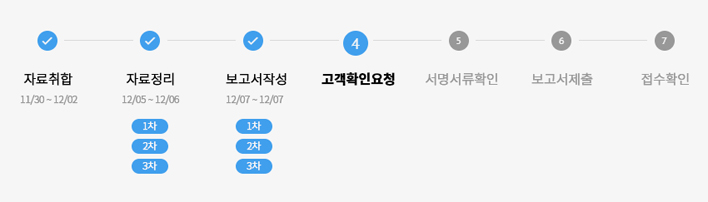

Perfect 소득신고
#소득신고 #FBAR #FATCA
‘완벽한 절세’를 위한
개인 세금 신고 서비스
똑같은 세금 신고,
어떻게 준비하느냐에 따라
세금혜택이 천차만별입니다.
미국 세금 보고는 사전에 어떻게 준비하고 대응하느냐에 따라 혜택이 천차만별입니다.
그래서 나에게 가장 많은 혜택을 주는 길로 안내할 가이드를 만나는 것이 가장 중요합니다.
철저하고 꼼꼼한 서류 준비와 세법 연구를 통한 절세 혜택을 통해
고객님의 자산을 지켜드릴 수 있는 Mark Kang Tax의 서비스를 만나보세요.
CASE#1 절세사례
“세금을 많이 낼 줄 알았는데
오히려 환급을 받았어요”
지금까지 지인을 통해 세금 보고를 했습니다. 그러다가 저와 비슷한 상황을 가진 친구로부터 환급을 받는다는 말을 듣고 전문가에게 맡겨보고자 했습니다. 세법에 문외한 터라, 제가 간과하고 있던 부분을 회계사님께 진단받아 제대로 수정보고를 할 수 있었습니다. 덕분에 지난 2년간의 환급액을 늦게라도 받을 수 있어서 정말 다행이었습니다. 어떻게 해서 환급이 안되었지 제가 이해할 수 있게 설명도 주셔서 감사했습니다.
- 한○○ 고객님의 후기 中
CASE#2 절세사례
“작년에 혼자 신고할 때보다
많이 절세할 수 있었습니다”
혼자 세금 보고를 했었는데, 다양한 옵션이 잘 이해되지 않았고 나중에 불이익이 생기지 않을까 불안했었습니다. 한국/미국 세금이 너무 복잡해서 갑갑하던 차에 회계사님과 통화를 하였고, 먼저 계산해보시기도 전에 몇 가지 가능성을 제시하여 주셨습니다. 차분한 목소리도 믿음이 갔지만, 저희 세금 케이스에 대해 자세히 가능성을 설명해 주셔서, 안도의 한숨을 쉴 수 있었습니다. 절세할 수 있다는 사실도 기뻤고, 앞으로 혼자 복잡한 세금으로 고민을 하지 않아도 된다는 사실에 너무나 든든해졌습니다. 제가 혼자 계산했을 때 저희 부부 합쳐서 세금 낼 금액만 5000불 정도였던 것으로 기억합니다. 회계사께서 도와주신 덕분에 결과적으로 저희 가계는 10000불 가까이 절세하게 되었습니다!
- 성○○ 고객님의 후기 中
혹시나, 하는 걱정 미리 없애주는
안심 피드백 시스템
세무보고를 진행하다보면 고객님들의 고민과 걱정을 가장 가까이서 듣게됩니다.
그 고민들과 피드백들을 모두 담아 시스템에 반영하여
고객님이 안심할 수 있는 완벽한 절세 시스템을 구축하고 있습니다.
완벽한 절세를 위한
6가지 서비스
회계 서비스를 이용하시는 고객님들이 불안해하지 않고 최고의 혜택을 누리실 수 있도록
철저한 원칙에 입각한 체계적인 시스템으로 세금보고를 진행합니다.
완벽한 절세
완벽한 절세
절세 시나리오 연구
Mark Kang Tax는 자체적으로 보유한 절세 시나리오를 통해 현재 고객 상황에 가장 적합한 절세 방안을 연구합니다. 세법을 많이 알수록 혜택도 늘어납니다. 같은 조건의 사람도 어떻게 보고를 하느냐에 따라 세금을 환급받을 수도 있고, 세금을 납부하게 될 수도 있습니다. 그 차이는 꼼꼼하고 철저한 세법의 숙지에서 시작되기에 끊임없이 한국과 미국의 세법을 꼼꼼히 연구합니다.
눈으로 확인하는 절세금액
얼마만큼의 세금을 아낄 수 있었는지를 한눈에 확인하실 수 있도록 절세 금액을 알려드립니다. 많은 분들이 한국 세법과 미국 세법의 개념 차이를 알지 못해 혜택을 제대로 받지 못해서 세금을 더 내거나 받을 수 있는 환급을 못 받는 경우가 많이 있습니다. 더불어, 신고 서류의 누락 또는 잘못으로 페널티가 추가로 부과되는 경우도 많이 있습니다.
철저한 준비
철저한 준비
1:1 맞춤 자료준비 서포팅
미국 세금보고는 홈택스 전산 시스템을 통해 자동으로 자료가 정리되는 한국 세금 보고와 달리 본인이 직접 모든 자료를 취합하고 정리해야 합니다. 만약, 자료가 누락되거나 잘못 보고되면 벌금 등의 불이익을 받을 수 있기 때문에, 철저한 서류 준비는 필수입니다. 하지만, 납세자는 세법을 잘 몰라 어디서부터 어떤 자료를 준비해야 하는지를 잘 모르기 때문에 제대로 보고 하기가 어렵습니다. 특히, 본인의 상황에 따라서 준비해야 하는 서류가 각기 다르고 복잡합니다. Mark Kang Tax 는 각각의 고객마다 자료를 제대로 준비할 수 있도록 1:1 맞춤 자료 준비 서포팅을 해드립니다. 한번 주어진 자료를 받고 끝내는 것이 아니라 자료가 완벽하게 준비될 때까지 추가 자료 요청을 진행하여 제대로 된 보고를 하기 위해 최선을 다합니다.
3차 검수 프로세스
미국 세금 신고는 미국 세법에 맞게 처음부터 끝까지 정확하게 정리해서 보고해야 합니다. 하지만, 보고서 작성 업무도 사람이 하는 일이기에 실수가 나올 수 있습니다. Mark Kang Tax는 실수를 최소화하기 위해 자료 정리 및 보고서 작성 프로세스의 각 단계마다 3번씩 꼼꼼하게 검수하여 완벽하고 문제없이 보고서를 준비하고 최선을 다합니다.
투명한 과정
투명한 과정
진행 과정 조회 서비스
복잡하고 까다로운 미국 세금 보고 과정에서 고객님들이 안심하실 수 있도록 실시간 진행 과정 조회 서비스를 제공합니다. 작업이 시작됨과 동시에, 보내드리는 링크를 통하여 지금 어떤 작업이 진행 중인지 언제든지 확인하실 수 있습니다. 이외에 더 궁금하신 점이 있으시면 이메일 및 카카오 채널로 언제든 문의하실 수 있습니다.

* 개인 프로세스 안내 예시 이미지
시차 없는 고객 응대
급하게 연락이 필요할 때 시차 때문에 걱정이 되신다구요? 저희는 한국 및 뉴욕에서 담당 직원이 고객님을 도와드리고 있습니다. 따라서 전 세계 어디에서도 시차 걱정 없이 전화, 이메일 및 카카오 채널을 통해서 문의하실 수 있습니다.
마크강 택스 영업시간
한국: 월 ~ 금 오전 9시 ~ 오후 6시
뉴욕: 월 ~ 금 오전 9시 ~ 오후 8시
소득세 신고 및
금융자산 신고 Q&A